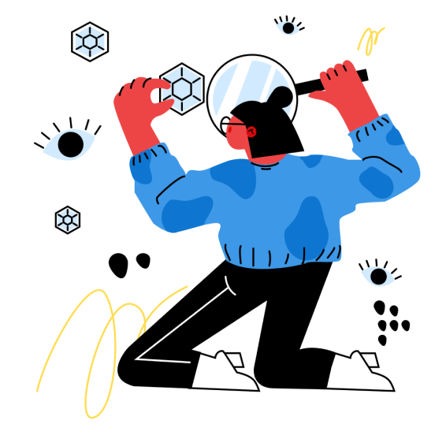

<!-- busca -->
<link rel="stylesheet" href="./home.page.scss">
<link rel="preconnect" href="https://fonts.googleapis.com">
<link rel="preconnect" href="https://fonts.gstatic.com" crossorigin>
<link href="https://fonts.googleapis.com/css2?family=Poppins:wght@200;300;600;700&display=swap" rel="stylesheet">

<ion-content [fullscreen]="true">

<div class="tudo">
  

  <h1 class="titulo"><b>busca</b></h1>

  <ion-searchbar search-icon="search-circle" placeholder="buscar"></ion-searchbar>

<ion-label>
  <ion-button class="btn-1" shape="round">Feminino</ion-button>
  <ion-button class="btn-2" shape="round">Maculino</ion-button>
  <ion-button class="btn-3" shape="round">Todos</ion-button>
  <ion-button class="btn-4" shape="round">Sem preferência</ion-button>
</ion-label>   
</div>

</ion-content>